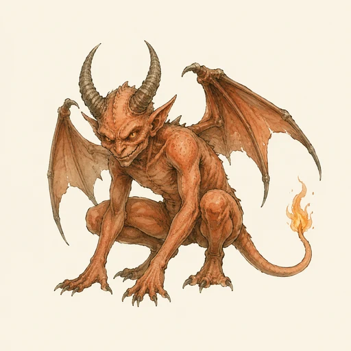
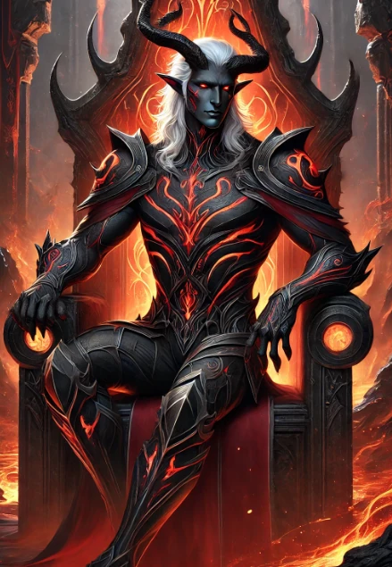
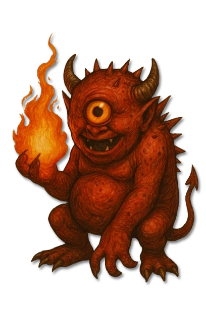

???
???
Noch nicht ausgearbeitet.

KreaturenarchivInfernale Sphären · Die Reiche Dagons und Sanguines · Archivblatt IV / 04
Von Dagon und Sanguine geformte infernale Finsteralben, Dämonen und Teufel
Inferniiden sind eine mächtige Untergruppe der Finsteralben, deren Formen von gepeinigten Seelen und niederen Lemuren bis zu hohen Dagonaren, gestaltwandelnden Dienern Sanguines und den beinahe göttlichen Erzteufeln reichen. Ihre Ordnung folgt zwei deutlich getrennten Schöpferlinien.

„Frage bei einem Inferniiden nicht zuerst nach Hörnern oder Flammen; frage, wessen Wille durch seine Gestalt spricht.“Lehrsatz der Thalenorischen Akademie zur Infernalordnung
Sechs Merkmale · Skala 1–10
Die Tafel beschreibt die gemeinsame Ordnung der Inferniiden. Sie misst Bindung, Rangzwang und Wandelbarkeit der gesamten Gattung statt Eigenschaften eines einzelnen Wesens.
Quelle der Einordnung: Aus Schöpfung, Rangordnung, Gattungsbreite, infernaler Magie und den überlieferten sakralen Gegenmitteln abgeleitet
Zwei Schöpferlinien
Die beiden Linien teilen einen infernalen Ursprung, besitzen aber eigene Fürsten, hohe Diener und niedere Gefolgschaften. Balors Sprösslinge bilden innerhalb Dagons Linie eine gesonderte Unterordnung.
Herrschaft des Feuers
Dagons Linie steigt von niederen Feuerwesen über Kriegerkasten bis zu sechs unmittelbaren Inkarnationen seines Wesens auf.
Infernale Fürsten
Die sechs Prinzen stehen gesondert über sämtlichen übrigen Teufeln.
Hohe Inferniiden
Niedere Inferniiden
Spezifische Diener Balors

Balors Sprösslinge
Gewaltige einäugige Zerstörer und ehemalige Befehlshaber in Balors verwüstenden Heeren.

Balors Sprösslinge
Kleine einäugige Feuerlinge, die nach Balors Fall herrenlos durch Ruinen und warme Wildnisse ziehen.
???
Noch nicht ausgearbeitet.
???
Noch nicht ausgearbeitet.
Herrschaft der Begierde
Sanguines Gefolge beherrscht Erscheinung, Traum, Gefühl und soziale Tarnung; auch seine niederen Diener wirken vor allem durch Einfluss.
Hohe Inferniiden
Niedere Inferniiden
Inferniiden werden in sterblichen Überlieferungen meist als Teufel oder Dämonen bezeichnet. Die Begriffe erfassen jedoch nur einen Teil einer weit verzweigten Ordnung aus Finsteralben, niederen Dienern und beinahe göttlichen Fürsten.
Ihre Gestalten tragen die Macht, den Charakter und die Absichten ihrer Schöpfer. Dagon prägt Krieg, Feuer und Zerstörung; Sanguine prägt Begierde, Täuschung, Wandel und seelische Abhängigkeit.
Viele Inferniiden gehen aus verdammten Seelen hervor, die in infernalen Domänen über lange Zeit durch Leid, Korruption und Magie umgeformt werden. Schwache Seelen sinken zu Lemuren oder Sklaven herab, während widerstandsfähige Seelen höhere Formen annehmen können.
Die mächtigsten Gestalten wurden unmittelbar aus der Essenz ihres Schöpfers gebildet. Für sie gelten andere Maßstäbe als für gewandelte Seelen, denn ihre Existenz ist an den fortdauernden Willen einer infernalen Gottheit gebunden.
Rang ist bei Inferniiden keine bloße Amtsbezeichnung. Er entscheidet über körperliche Gestalt, magische Reichweite, Befehlsgewalt und darüber, wem ein Wesen gehorchen muss.
Loyalität verhindert keine Intrigen. Höhere Inferniiden kämpfen um Einfluss, niedere Diener wechseln bei Schwäche ihres Meisters die Gefolgschaft, und selbst Fürsten spiegeln die inneren Widersprüche ihrer Schöpfer.
An der Spitze stehen sechs Erzteufel als lebende Aspekte Dagons. Dagonaren führen Heere, Ignarii brechen Widerstand mit magmatischer Gewalt, während Igniten und Nixhunde die niederen Reihen füllen.
Balgrath und Flickerlinge werden gesondert als Sprösslinge und ehemalige Unterlinge Balors geführt. Zwei weitere Plätze der alten Übersicht bleiben ungeklärt und deshalb ausdrücklich mit ??? vermerkt.
Sanguines Erzdämonen stehen über Inkubi, Sukkuben und Formwandlern. Diese hohen Diener gewinnen durch Traum, Verführung, Identitätsraub und die genaue Kenntnis sterblicher Schwächen.
Lustlinge und Satyre bilden die niederen Ränge. Der eine beobachtet und dient beinahe unsichtbar, der andere lenkt Stimmung, Fest und Begehren durch Musik und Illusion.
Ein gemeinsames Gegenmittel für alle Inferniiden existiert nur bedingt. Sakrale Magie und heilige Zeichen stören ihre infernale Essenz, doch Feuerwesen verlangen andere Taktiken als Traumjäger oder Formwandler.
Vor einer Konfrontation muss daher zuerst die Linie bestimmt werden. Kälte und Wasser bremsen viele Diener Dagons; geistige Abschirmung, überprüfbare Identitäten und geweihte Schutzräume begrenzen Sanguines Gefolge.